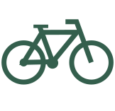

fair
Fair trade provides farmers and workers in developing countries with a fair price for their produce
equal
The organisation does not discriminate in hiring, remuneration, access to training, promotion, termination or retirement based on race, caste, national origin, religion, disability, gender, sexual orientation, union membership, political affiliation, HIV/AIDS status or age.
sustainable
FairTrade movement tries to improve the environment! Fairtrade growers are looking for long-term sustainable production and do not use agrochemicals preventively. Basically all Fairtrade products you can buy are guaranteed organic.
The store's goods are manufactured by skilled craftsmen and farmers from all around the world
We have nice ceramics from South Africa, warm alpaca socks from Peru, certified toys, jewelry, solar powered lamps, World music, new-age goods, many little things that make a happy as well as delicious chocolate, quality coffee and much more!
see our productsDid you know that
For each cup of fairtrade coffee is given to farmers 5x times more foam than usual.
of all workers on Fairtrade plantations are from Africa.
On platations, workers spent 26% of their Fair Trade premium on education.
VISIT US
WHEN?
-
Monday10-17.30
-
Tuesday10-17.30
-
Wednesday10-17.30
-
Thursday10-17.30
-
Friday10-18.00
-
Saturday10-16.00
-
SundayClosed

How can you get to us?
by bike
Because our shop is right in the heart of the city, you can comfortably ride your bike to get to us. Bike parking spots are right in front of the entrance. You can not mistake it, we are located directly opposite the fotex supermarket.
by bus
When you decide to travel by bus, you can choose form multiple options. Thle closest bus stop is called Klostertorvet and it literally minute away from us. The only thing you need to do is to get in number 1A, 2A, 3A, 4A, 11, 13, 16, 17, 18, 22, 23, 43, 45 or number 46.
by car
Do you prefer to drive? No problem, just go to Klostergade street where is the nearest Parkeringsplads is located, Klostergade 59. In case you come too late and the parking is full you can go to Teatertorvet Parkeringsplads on Graven 21.
Thank you for making our planet a better place.